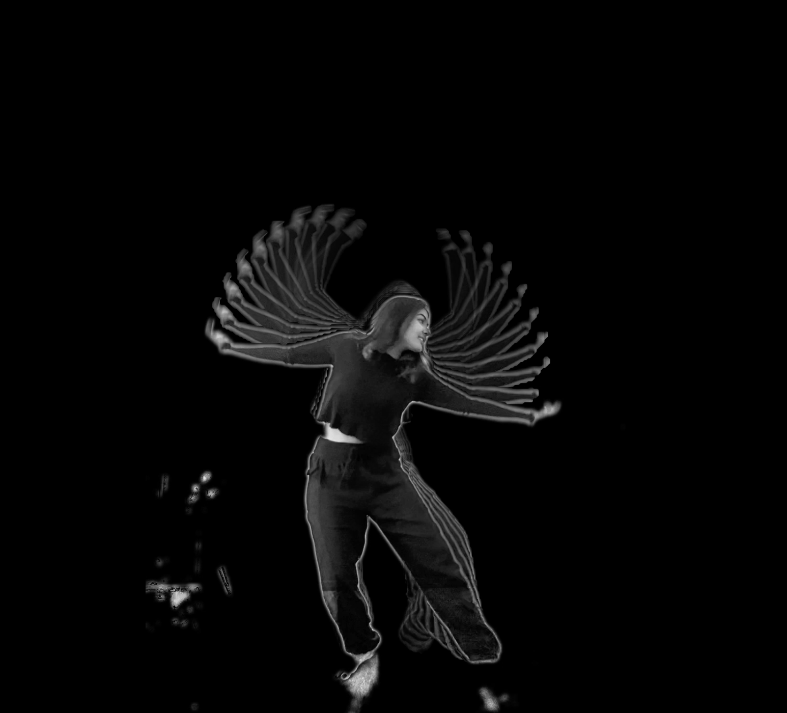
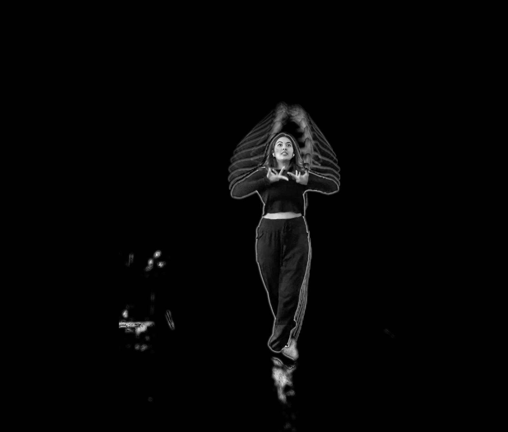

"Hasta"
Illusion of a group of dancers displaying mudras and nrittya
A virtual space where one dancer becomes ten dancers
In traditional dance, many dancers overlap to create an illusion for the audience. This is normally used to depict nature and gods. The purpose of this concept was to use technology to represent this religious concept.